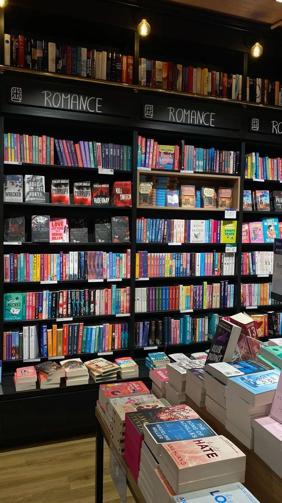

1. The Art of Deep Reading in a Distracted World
Posted on October 10, 2026 by Sarah Jenkins
In today's fast-paced digital era, reading complex books requires intentional focus. In this post, we share practical strategies for building a daily reading habit without digital interruptions.
